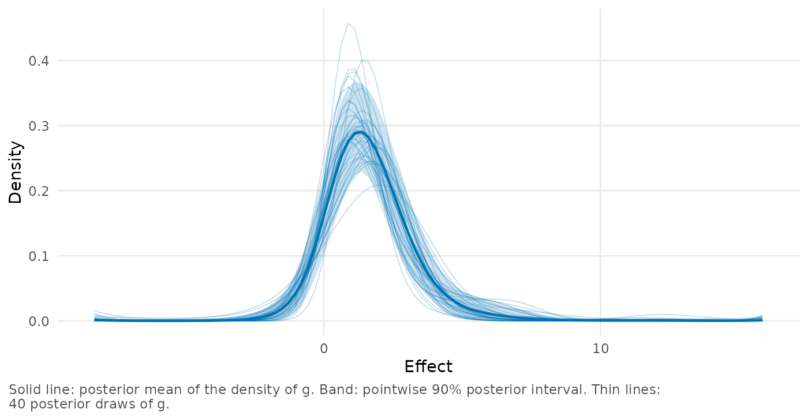

This vignette describes the model that bayes_efron_fit()
fits. It states the deconvolution problem, defines the log-spline family
for the distribution of effects and the prior on its coefficients, and
shows how the posterior distribution of a site effect and the summaries
of the distribution of effects are computed from the posterior draws. It
is written for readers who want the formulas behind the package’s
output. To learn how to run an analysis, start with
vignette("bayesEfron").
For the numerical examples we use krw_fit, which comes
with the package. This is the fit to the callback gaps at 97 firms that
vignette("bayesEfron") analyzes.
library(bayesEfron)
fit <- krw_fitA meta-analysis or a multisite trial yields, for each of \(K\) sites, an estimate \(\hat\theta_i\) of an effect and a standard error \(\sigma_i\). Inference about the true effects \(\theta_i\) can be split into two steps:
- inference from the estimates to the distribution of true effects over sites, and
- inference from that distribution, together with a site’s own estimate, to the true effect of the site.
Step (b) is an application of Bayes’ rule once the distribution is known. Step (a) is the difficult one. The model comes from Lee and Sui (2025), who give the derivations and a simulation study.
The deconvolution problem
For sites \(i = 1, \ldots, K\) the model is
\[ \hat\theta_i \mid \theta_i \sim N(\theta_i, \sigma_i^2), \qquad \theta_i \sim g , \]
with the \(\theta_i\) independent. The standard errors \(\sigma_i\) come from the design of each study. We treat them as known, and they usually differ from site to site. This is the model of a random-effects meta-analysis (Raudenbush and Bryk 1985), except that we leave the distribution \(g\) of true effects unspecified.
Each estimate is the sum of a draw from \(g\) and an error, so its density is not \(g\) but the convolution of \(g\) with a normal density,
\[ f_i(x) = \int \phi(x;\, \theta, \sigma_i)\, g(\theta)\, d\theta , \]
where \(\phi(x; \theta, \sigma)\) is the normal density with mean \(\theta\) and standard deviation \(\sigma\). Recovering \(g\) from data whose distributions are the \(f_i\) is called deconvolution (Efron 2016).
If \(g\) were known, step (b) would be immediate. By Bayes’ rule the posterior density of a site’s effect is
\[ p(\theta_i \mid \hat\theta_i) \propto g(\theta_i)\, \phi(\hat\theta_i;\, \theta_i, \sigma_i) , \]
the product of \(g\) and the likelihood of the site’s own estimate. When \(\sigma_i\) is small, the likelihood is narrow and the posterior stays near the estimate. When \(\sigma_i\) is large, the posterior is drawn toward the regions where \(g\) puts its probability. How far, and in which direction, depends on the shape of \(g\). That is the idea of empirical Bayes (Robbins 1956): we learn about \(g\) from the other sites, and then use \(g\) to read each site. In this sense \(g\) is the prior distribution of each \(\theta_i\), and the package’s printed output labels it as such. The distributions of \(\alpha\) and \(\lambda\) introduced below are priors on the parameters of \(g\).
The distribution \(g\) is also of interest in itself. From it we obtain the proportion of sites with negligible or large effects, the effect to expect at a new site, and the amount of variation between sites.
The difficulty lies in step (a). Convolution loses information: distributions \(g\) that differ greatly in detail can give nearly the same densities \(f_i\), so the data constrain the detail of \(g\) only weakly, and less so the larger the standard errors. Some assumption about \(g\) is needed to obtain a stable estimate from a few dozen or a few hundred sites.
Assumptions about g
The oldest assumption is that \(g\) is normal. Its mean and variance are then the two parameters of the random-effects model, and the posterior mean of a site effect is a weighted average of the site’s estimate and the overall mean. The assumption is convenient and often adequate. It fails, however, when the effects fall into groups, or when a few sites have effects much larger than the rest, because a normal distribution has one peak, is symmetric and has light tails.
At the other extreme no assumption is made, and \(g\) is estimated by nonparametric maximum likelihood, that is, by maximum likelihood over all distributions (Kiefer and Wolfowitz 1956; Laird 1978). The maximizing distribution is discrete, with no more points of support than there are sites (Lindsay 1995), and it can be computed by convex optimization (Koenker and Mizera 2014). A discrete estimate is awkward when the effects are thought to vary continuously, and quantities such as the probability of an effect above a given size depend on where the few points of support happen to fall.
Between the two are parametric families richer than the normal, such as the mixtures of a point mass at zero with a normal or a Laplace distribution in the ebnm package (Willwerscheid et al. 2025). These suit problems in which most effects are thought to be zero, but, like the normal, they commit to a shape in advance.
Efron (2016) proposed a family that is flexible in shape but has few parameters, and in which \(g\) is smooth. bayesEfron uses that family. Lee and Sui (2025, sec. 2) discuss the alternatives at greater length.
The log-spline family
Let \(\tau_1 < \cdots < \tau_L\) be a grid of equally spaced points that covers the values the true effects can plausibly take, and let \(g_j\) be the probability that \(g\) gives to \(\tau_j\). The family is
\[ g_j(\alpha) = \frac{\exp(B_j^\top \alpha)} {\sum_{l=1}^{L} \exp(B_l^\top \alpha)}, \qquad j = 1, \ldots, L, \]
where \(B_j\) is the vector of \(M\) natural cubic spline functions evaluated at \(\tau_j\) (see Hastie et al. 2009 for the splines) and \(\alpha\) is a vector of \(M\) coefficients. The logarithm of \(g\) is thus a smooth function of the effect, described by \(M\) numbers, up to the constant that makes the probabilities sum to one. With \(\alpha = 0\) every grid point has the same probability. Other values of \(\alpha\) give distributions with one or several peaks, with skewness, or with long tails, and the larger \(M\) is, the more shapes are within reach.
We approximate a continuous distribution by one on the grid. With a
fine grid the sum \(\sum_j g_j\, \phi(x;
\tau_j, \sigma_i)\) is close to the integral that defines \(f_i\), so little is lost as long as the
grid spacing is small compared with the standard errors. The defaults
are \(M = 6\) spline functions and
\(L = 101\) points, as in the
application of Lee and Sui (2025), with more points when the smallest
standard error or the spread of the estimates is small compared with the
spacing. vignette("choosing-a-grid") discusses both choices
and the placement of the grid.
The spline basis has no constant term, because adding a constant to
every \(B_j^\top \alpha\) leaves \(g\) unchanged, so that the coefficient of a
constant column could not be determined by the data. We use the columns
of \(B\) as splines::ns()
returns them, as in the code that accompanies Lee
and Sui (2025). The deconvolveR
package (Narasimhan
and Efron 2020) by default centers each column and scales it
to a sum of squares of one, so the coefficients of the two packages are
on different scales, which matters for the prior distribution on the
coefficients described below.
A normal component at each grid point
In the family as defined so far, \(g\) is a set of point masses, which keeps
the effects on the grid. When the problem bounds the effects, give those
bounds as support and use reading = "step" for
probabilities and interval limits, because the default interpolated
reading spreads the probability at each limit of the grid half a grid
spacing beyond it. An example is given in
vignette("choosing-a-grid"). Where the effects are not
bounded, each grid point can instead carry a normal distribution
(component = "normal"), which allows effects between the
grid points even when their standard errors are small. The components
have a common standard deviation \(\tau_c\), a multiple (width)
of the grid spacing, as in the penalized Gaussian mixture of Sui and Tipton (2026):
\[ g(\theta) = \sum_{j=1}^{L} g_j(\alpha)\, \phi(\theta;\, \tau_j, \tau_c) . \]
Nothing else changes, and the density of an estimate keeps its form, since the convolution of a normal component with normal error is normal:
\[ f_i(x) = \sum_{j=1}^{L} g_j(\alpha)\, \phi\!\left(x;\, \tau_j, \sqrt{\sigma_i^2 + \tau_c^2}\right) . \]
Point masses are the case \(\tau_c = 0\) and the default. With normal components \(g\) is a density, it reaches about two of their standard deviations beyond each limit of the grid, and a standard error smaller than the grid spacing does no harm.
We write the formulas below for point masses. With normal components the likelihood has \(\sqrt{\sigma_i^2 + \tau_c^2}\) in place of \(\sigma_i\), and the posterior distribution of a site effect is a mixture of normal distributions in place of probabilities on the grid points: within component \(j\) the effect has mean \(\tau_j + b_i (\hat\theta_i - \tau_j)\) and variance \(b_i \sigma_i^2\), with \(b_i = \tau_c^2 / (\tau_c^2 + \sigma_i^2)\).
The prior on the coefficients
Six coefficients estimated from a few dozen sites have to be regularized, or the estimated \(g\) follows the noise in the sample. Efron (2016) regularizes them with a penalty of fixed size in the likelihood. We instead place a prior on the coefficients, with a strength that is itself estimated:
\[ \alpha_m \mid \lambda \sim N(0,\, 1/\lambda), \quad m = 1, \ldots, M, \qquad \lambda \sim \mbox{half-Cauchy}(0, 5) . \]
The second argument of the normal distribution is a variance, so the coefficients have standard deviation \(\lambda^{-1/2}\). A large \(\lambda\) keeps the coefficients near zero, and \(g\) near the uniform distribution on the grid. A small \(\lambda\) lets them move, and \(g\) take whatever shape the likelihood favors. Because \(\lambda\) has a prior of its own, its value is estimated along with the coefficients. Six coefficients carry little information about it, however, and its posterior distribution is wide.
For the callback gaps, we extract the draws of \(\lambda\) from the fit and compute the median and the limits of a 90% posterior interval, first for \(\lambda\) and then for the standard deviation \(\lambda^{-1/2}\) of the coefficients.
draws <- posterior::as_draws_matrix(fit)
lambda <- as.numeric(draws[, "lambda"])
quantile(lambda, c(0.05, 0.5, 0.95))
#> 5% 50% 95%
#> 0.007785709 0.040286195 0.139342447
quantile(1 / sqrt(lambda), c(0.05, 0.5, 0.95))
#> 5% 50% 95%
#> 2.678917 4.982208 11.333164The interval for \(\lambda\) runs from 0.008 to 0.139, a range of more than a factor of ten, and the interval for the standard deviation of the coefficients, from the second call, runs from 2.7 to 11.3. The size of these numbers has no meaning apart from the basis, and bayesEfron leaves the columns of the basis unscaled.
The half-Cauchy distribution is the choice of Lee and Sui (2025). Gelman (2006) proposed it as a prior for the standard deviation of the effects in a hierarchical model with few groups. Here we place it on the precision \(\lambda\), which implies a different prior for the standard deviation of the coefficients. Lee and Sui (2025, Appendix D) replaced it with other families and other scales in a simulation, fitted with a variational approximation, and report that the estimates of the site effects and the coverage of their intervals changed little.
What this prior means for \(g\) is easier to see than what it means for the coefficients. It is centered on \(\alpha = 0\), the uniform distribution on the grid, whose standard deviation is the width of the range divided by \(\sqrt{12}\). The range of the grid is therefore the scale of the prior distribution of \(g\): before seeing any data, we take the effects to be spread over all of it.
For the 97 firms the prior median of the standard deviation of \(g\) is 0.29 of the width of the grid and
its posterior mean is 0.07, so the data dominate the prior. With few
sites they do so less completely, which is why the range must then be
chosen with care. The prior and the posterior for three data sets are
shown in vignette("choosing-a-grid"), and the consequence
for 19 studies in vignette("teacher-expectancy").
The full model and the sampled parameters
Put together, the model has four parts,
\[ \begin{aligned} \hat\theta_i \mid \theta_i &\sim N(\theta_i, \sigma_i^2), \\ P(\theta_i = \tau_j \mid \alpha) &= g_j(\alpha), \\ \alpha_m \mid \lambda &\sim N(0,\, 1/\lambda), \\ \lambda &\sim \mbox{half-Cauchy}(0, 5), \end{aligned} \]
and each quantity depends only on the one before it: \(\lambda \rightarrow \alpha \rightarrow g \rightarrow \theta_i \rightarrow \hat\theta_i\).
Because each \(\theta_i\) takes values on the grid, we can sum it out and need not sample it, which gives the likelihood of the coefficients,
\[ p(\hat\theta \mid \alpha) = \prod_{i=1}^{K} \sum_{j=1}^{L} g_j(\alpha)\, \phi(\hat\theta_i;\, \tau_j, \sigma_i) . \]
We therefore sample only \(\alpha\)
and \(\lambda\), so the sampler works
in \(M + 1\) dimensions whatever the
number of sites. The number of sites enters only through the cost of
computing the likelihood, which is the cost of \(K \times L\) normal densities computed once
and a matrix product at each step. We use Stan’s No-U-Turn sampler (Hoffman and Gelman
2014; Carpenter et al.
2017). The logarithm of the likelihood is stored for each
draw as log_marginal_likelihood. The name refers to the
true effects, which have been summed out. It is not the marginal
likelihood of the model, in which \(\alpha\) and \(\lambda\) would be integrated out as
well.
The result is a set of draws \(\alpha^{(1)}, \ldots, \alpha^{(S)}\) from the posterior distribution of the coefficients, and with them draws \(g(\alpha^{(s)})\) of the distribution of effects. Step (a) thus ends not with one estimate of \(g\) but with a posterior distribution over \(g\).
With its draws argument, plot_g() adds
single draws of \(g\) to the plot. Here
we show 40 of them for the callback gaps, with scale = 100
so that the gaps are in percentage points.
plot_g(fit, draws = 40, scale = 100)
The thin lines are the draws of \(g\), and the thick line is the posterior
mean. The draws differ in the height of their peak and in their tails.
For a distribution with two separate groups,
vignette("twin-towers") shows the mean and its band.
The posterior distribution of a site effect
For a given \(\alpha\), Bayes’ rule on the grid gives the posterior probabilities of the effect of site \(i\),
\[ w_{ij}(\alpha) = \frac{g_j(\alpha)\, \phi(\hat\theta_i;\, \tau_j, \sigma_i)} {\sum_{l=1}^{L} g_l(\alpha)\, \phi(\hat\theta_i;\, \tau_l, \sigma_i)}, \]
and from them a mean \(\sum_j w_{ij} \tau_j\), a variance and a mode. This is step (b) for one candidate \(g\). An empirical Bayes analysis stops here, with \(\alpha\) replaced by an estimate.
The posterior distribution of \(\theta_i\) given the data averages over the uncertainty about \(g\):
\[ P(\theta_i = \tau_j \mid \mbox{data}) = \int w_{ij}(\alpha)\, p(\alpha \mid \mbox{data})\, d\alpha \approx \frac{1}{S} \sum_{s=1}^{S} w_{ij}(\alpha^{(s)}) . \]
The package computes these averaged probabilities for every site from
the stored draws of \(g\), and
everything it reports about a site is a summary of them.
coef() returns the posterior mean \(\sum_j P(\theta_i = \tau_j \mid \mbox{data})\,
\tau_j\), and confint() and
site_summary() return quantiles of the same distribution,
so an interval is computed from the distribution itself and not from a
sample of it. With point masses a quantile is read after the probability
of each grid point has been spread evenly over the cell of one grid
spacing around it, which makes the limits vary smoothly rather than jump
from one grid point to the next. See ?g_summary for this
reading and the alternative. The posterior mode,
coef(type = "mode"), is the grid point at which the
averaged probabilities are largest.
The posterior variance has two parts,
\[ \mbox{Var}(\theta_i \mid \mbox{data}) = E\{\mbox{Var}(\theta_i \mid \alpha)\} + \mbox{Var}\{E(\theta_i \mid \alpha)\} , \]
where the expectation and the variance outside the braces are over the posterior distribution of \(\alpha\). The first part is the uncertainty about the effect that would remain if \(g\) were known. The second is the uncertainty about \(g\) as it bears on this site, which an analysis that plugs in one estimate of \(g\) leaves out (Lee and Sui 2025, sec. 3.4 and Appendix A).
In the table that site_summary() returns, the columns
sd_given_g and sd_about_g are the square roots
of the two parts. The code below adds a column with the fraction of the
posterior variance that comes from the uncertainty about \(g\) and prints three firms: the firm with
the smallest standard error, the firm with the largest estimate and the
firm with the largest standard error.
sites <- site_summary(fit)
sites$share_about_g <- sites$sd_about_g^2 / sites$sd^2
shown <- c(which.min(sites$se), which.max(sites$estimate), which.max(sites$se))
sites[shown, c("label", "estimate", "se", "sd_given_g", "sd_about_g", "sd",
"share_about_g")]
#> label estimate se sd_given_g sd_about_g
#> 29 Quest Diagnostics -0.008616163 0.00534379 0.004863534 0.001016245
#> 62 Genuine Parts (Napa Auto) 0.098170502 0.02047973 0.022754349 0.014348927
#> 65 Walmart 0.070000000 0.03919826 0.017119474 0.003353090
#> sd share_about_g
#> 29 0.004968573 0.04183440
#> 62 0.026900783 0.28451752
#> 65 0.017444759 0.03694541In each row, the squares of sd_given_g and
sd_about_g sum to the square of sd, the
posterior standard deviation that summary() reports. The
fraction in the last column, share_about_g, is not the same
for every firm. For the median firm it is 2.3%, and for the firm with
the largest estimate, whose posterior distribution depends on the right
tail of \(g\), it is 28%.
For most sites, then, the second part is small. In
vignette("empirical-bayes") we plug in the posterior mean
of \(g\) for these firms instead of
using its posterior distribution, and the 90% intervals become 0.4%
shorter on average. What the posterior distribution of \(g\) adds is concentrated where an estimate
of \(g\) is least certain, in the sites
that lie in its tails.
For the coverage of the site intervals in simulated data sets with
known effects, see vignette("implementation").
Summaries of g
Every draw of \(g\) has a mean, a variance and a standard deviation,
\[ \mu(\alpha) = \sum_{j} g_j(\alpha)\, \tau_j, \qquad v(\alpha) = \sum_{j} g_j(\alpha)\, \{\tau_j - \mu(\alpha)\}^2 + \tau_c^2 , \]
where the last term of the variance is zero for point masses. These
three quantities are stored as mean_g, var_g
and sd_g. Their posterior distributions answer the
questions that the mean and the between-site standard deviation answer
in a random-effects model, without the assumption of normality, and
confint(fit, type = "g") summarizes them. Other features of
\(g\) have posterior distributions as
well, and g_summary() returns them: its density, its
distribution function, its quantiles, and the probability that it gives
to an interval.
For example, we can ask for the probability that \(g\) gives to gaps above 5 percentage points, which is 0.05 in the units of the estimates.
g_summary(fit, type = "prob", lower = 0.05)
#> from to mean lower upper
#> 1 0.05 Inf 0.03397636 0.003640882 0.09058668We estimate the proportion of firms with a gap above 5 percentage points as 3.4%, with a 90% interval from 0.4% to 9.1%. A proportion in the tail of \(g\) is known far less precisely than its mean.
The effective number of parameters
The fit also reports an effective number of parameters, which is not in Lee and Sui (2025). For a given \(\alpha\) it is
\[ \sum_{i=1}^{K} \frac{\mbox{Var}(\theta_i \mid \alpha)}{\sigma_i^2} . \]
In the normal model each term is the weight that the posterior mean
gives to the site’s own estimate, so the sum counts how many estimates’
worth of information the sites keep for themselves: near \(K\) when there is little shrinkage, near
zero when the estimates are shrunk to a common value. With a general
\(g\) a term can exceed one, and the
sum is a rough guide. It is a different quantity from the
p_loo of loo(), which the loo package also
calls an effective number of parameters, as
?compare_efron_grids notes.
For this sum, the fit stores the mean, the standard deviation and three quantiles of the draws.
unlist(fit$metadata$effective_params_summary)
#> mean sd q5 q50 q95
#> 46.668012 6.377551 35.430396 46.916874 57.072080For the 97 firms the posterior mean is about 47.
logLik() returns the posterior mean of
log_marginal_likelihood with this number as its degrees of
freedom. Because that is not a maximized log likelihood,
AIC() and BIC() throw an error for a fit. To
compare fits, use loo(), within the limits that
vignette("choosing-a-grid") describes.